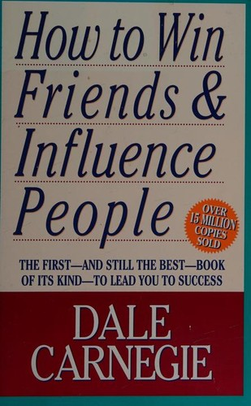

Thư viện review

Đắc Nhân Tâm
Bí quyết chinh phục bất kỳ ai không nằm ở tài năng hay địa vị — mà nằm ở khả năng khiến người khác cảm thấy quan trọng, được lắng nghe và được tôn trọng thực sự. Cuốn sách kinh điển nhất mọi thời đại về nghệ thuật giao tiếp và xây dựng mối quan hệ.
Đọc review →
Khởi Nghiệp Tinh Gọn
Phần lớn startup thất bại vì dành quá nhiều thời gian xây sản phẩm mà không ai cần. Lean Startup đề xuất vòng lặp Build–Measure–Learn: xây dựng nhanh, đo lường thực, học từ dữ liệu — để rút ngắn thời gian từ giả định đến sự thật được kiểm chứng.
Đọc review →
Chiến Lược Đại Dương Xanh
Thay vì cạnh tranh khốc liệt trong thị trường đã có, hãy tạo ra không gian thị trường mới không có đối thủ. Value Innovation cho phép đồng thời tạo ra giá trị vượt trội và giảm chi phí — phá vỡ đánh đổi mà chiến lược truyền thống coi là tất yếu.
Đọc review →Sức Mạnh Của Sự Tập Trung
Thành công không đến từ việc làm nhiều thứ — mà đến từ việc tập trung nhất quán vào những việc quan trọng nhất và xây dựng thói quen đúng. Sự tập trung không phải tài năng bẩm sinh — đó là kỹ năng có thể rèn luyện mỗi ngày.
Đọc review →Nguyên Tắc
40 năm nguyên tắc được chưng cất từ người sáng lập quỹ đầu tư lớn nhất thế giới. Thành công bền vững không đến từ tài năng — mà đến từ hệ thống nguyên tắc rõ ràng, kiểm chứng qua thực tế, và áp dụng nhất quán. Đau đớn cộng với phản tư chính là tiến bộ.
Đọc review →
Tư Duy Nhanh Và Chậm
Não người vận hành theo hai hệ thống: Hệ thống 1 — nhanh, tự động, cảm tính — và Hệ thống 2 — chậm, có chủ đích, lý tính. Phần lớn quyết định bị chi phối bởi Hệ thống 1 mà không hay biết. Nhận ra điều đó là bước đầu để tư duy sáng suốt hơn.
Đọc review →Đừng Bao Giờ Đi Ăn Một Mình
Networking không phải là trao đổi danh thiếp — mà là xây dựng kết nối chân thật bằng cách cho đi thực sự, liên tục, không có điều kiện, trước khi bạn cần bất cứ thứ gì. Paradox là: người cho đi nhiều nhất thường nhận lại nhiều nhất về lâu dài.
Đọc review →Lãnh Đạo Phục Vụ
Lãnh đạo thực sự không phải về quyền lực và vị trí — mà là về phục vụ: đặt nhu cầu và sự phát triển của người khác lên trên lợi ích cá nhân. Khi nhân viên được phục vụ đúng nghĩa, họ có động lực phục vụ khách hàng tốt hơn — và kết quả tự nhiên theo sau.
Đọc review →
Mục Tiêu
Một tiểu thuyết kinh doanh hiếm có: Alex Rogo có 3 tháng để cứu nhà máy sắp đóng cửa. Hành trình đó tiết lộ một sự thật đảo lộn tư duy vận hành — tối ưu từng bộ phận không tạo ra hệ thống tối ưu.
Đọc review →Trí Tuệ Tài Chính
Những con số tài chính không phải sự thật tuyệt đối — chúng chứa đựng giả định của con người. Khi bạn hiểu điều đó, bạn có thể đọc báo cáo, đặt câu hỏi đúng, và ra quyết định tốt hơn dù không phải kế toán.
Đọc review →Nhà Quản Trị Hiệu Quả
Drucker chỉ ra rằng hiệu quả không phải tài năng bẩm sinh — đó là một kỹ năng có thể học. Và nhiệm vụ cốt lõi của nhà quản trị không phải là làm việc nhiều, mà là làm đúng việc.
Đọc review →Từ Tốt Đến Vĩ Đại
Tại sao một số công ty bứt phá lên tầm vĩ đại trong khi những công ty khác mãi dậm chân ở mức tốt? Sau 5 năm nghiên cứu, Collins tìm ra câu trả lời — và nó không phải là điều bạn nghĩ.
Đọc review →
Cha Giàu Cha Nghèo
Tại sao người giàu ngày càng giàu hơn trong khi tầng lớp trung lưu mãi chật vật? Câu trả lời không nằm ở thu nhập — mà nằm ở cách bạn hiểu và dùng tiền.
Đọc review →